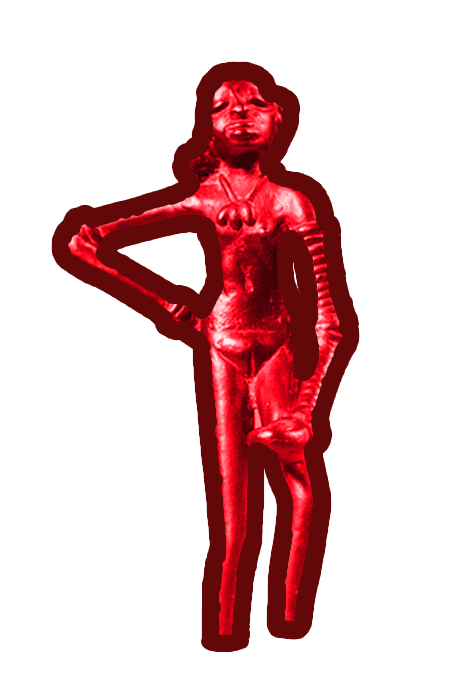
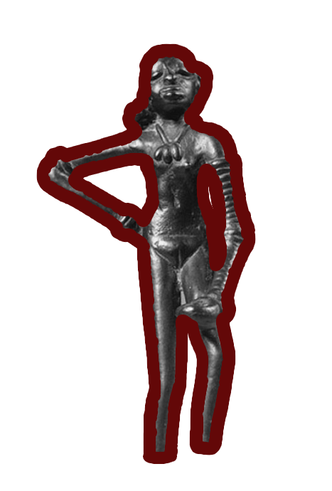
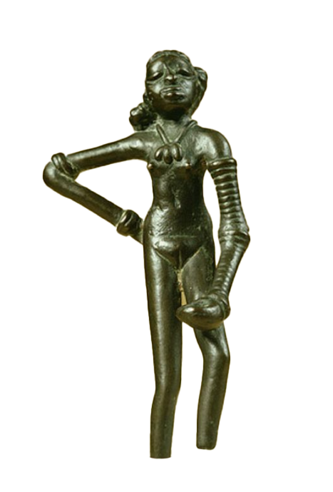

Lost wax casting, known as Madhuchchhishta Vidhana in Sanskrit, is an ancient Indian technique used for creating intricate metal sculptures and artifacts. This method dates back over 4,000 years and was extensively used in the Indus Valley Civilization and later by the Chola dynasty, which produced world-renowned bronze idols. The technique allowed artisans to create one-of-a-kind sculptures with remarkable precision, making it an essential part of Indian metallurgical history.
Lost wax casting was widely practiced across ancient India, especially in regions known for their metalwork, such as Tamil Nadu, Odisha, and West Bengal. The famous Dancing Girl of Mohenjo-Daro, dating back to 2500 BCE, is one of the earliest known examples of this technique. During the Chola period (9th–13th century CE), bronze sculptures of Hindu deities, including the iconic Nataraja (Shiva as the Cosmic Dancer), were crafted using this method. These sculptures displayed a deep understanding of human anatomy, movement, and artistic expression.
Wax Model Creation: A detailed model of the sculpture is crafted using beeswax or a similar wax mixture. Artisans carve intricate details by hand, making each piece unique. Sometimes, organic materials like resin or vegetable wax were mixed with beeswax for durability.
Clay Molding: The wax model is coated with fine clay, layer by layer, to create a hard mold. The mold is then dried to remove moisture. In some cases, rice husk or animal dung was mixed with the clay to improve its strength.
Heating & Wax Removal: The clay mold is heated in a kiln, causing the wax to melt and drain out, leaving a hollow cavity inside. This step is crucial, as any residual wax can lead to casting defects.
Metal Pouring: Molten metal, typically a bronze alloy (copper and tin), is carefully poured into the cavity left by the wax. The Chola artisans mastered the alloy ratio to achieve durability and intricate detailing.
Cooling & Breaking the Mold: After the metal cools and solidifies, the outer clay shell is broken away, revealing the final metal sculpture. Since the mold is destroyed in the process, each sculpture is unique.
Finishing Touches: Artists refine the sculpture's details, polish it, and sometimes add patina for an aged look. Engraving, inlay work, or gilding could also be added, depending on the desired aesthetic.
The lost wax method not only showcased the craftsmanship of Indian artisans but also reflected their understanding of metallurgy. The ability to control metal flow, temperature, and composition ensured that sculptures were durable and resistant to corrosion. The technique influenced later metalworking traditions in Southeast Asia, where Indian artisans spread their skills through trade and cultural exchange.
Despite being an ancient technique, lost wax casting is still widely used today in industries such as jewelry making, aerospace, and fine art. Modern variations involve advanced materials and computerized design tools, but the core principles remain the same. In India, artisans in Tamil Nadu and West Bengal continue to preserve and practice this traditional art form, creating exquisite temple sculptures and ritual objects.
Wax Model Creation
Clay Molding
Heating & Wax Removal
Metal Pouring
Cooling & Breaking the Mold